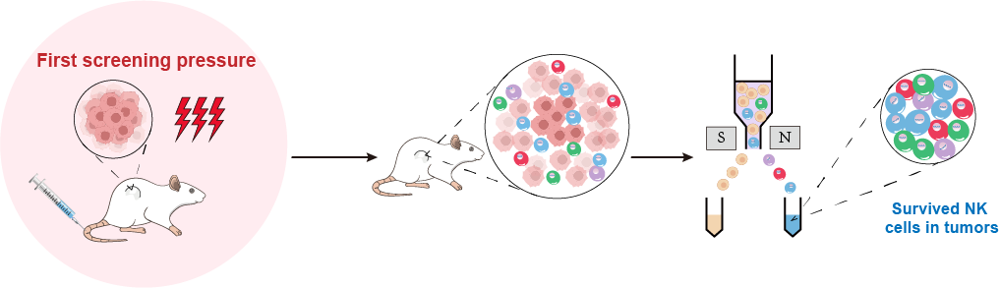

Our objective is to employ CRISPR screen methodology to identify the pivotal molecule capable of overcoming the immunosuppressive TME and subsequently utilize this gene in cellular immunotherapy. To achieve this, we have devised three artificial screening pressures.
FIRST SCREENING
Initially, we established a subcutaneous tumor-bearing mouse model of pancreatic cancer. Subsequently, we intratumorally injected NK cells infected with a GOF library into the tumor tissue, allowing for the selection of genes that exhibit resistance to the TME and enhance the survival of NK cells.

SECOND SCREENING
Subsequently, we conducted a co-culture experiment involving NK cells that were genetically modified to overexpress the aforementioned genes, in conjunction with pancreatic cancer tumor cells. This experimental setup served as a secondary screening environment, aimed at identifying genes that could facilitate the efficient secretion of effector molecules by NK cells under pressure.
THIRD SCREENING
3.1 booting anti-tumor effect
Consequently, a mouse model of pancreatic cancer bearing orthotopic tumors was established as the third screening pressure. The genes of interest identified under the initial stress condition were subsequently upregulated in NK cells, which were then reintroduced into tumor-bearing mice to identify the gene that could effectively impede the growth of pancreatic cancer.